Daily Journal Entries
Filter By Topic Or All For Chronological
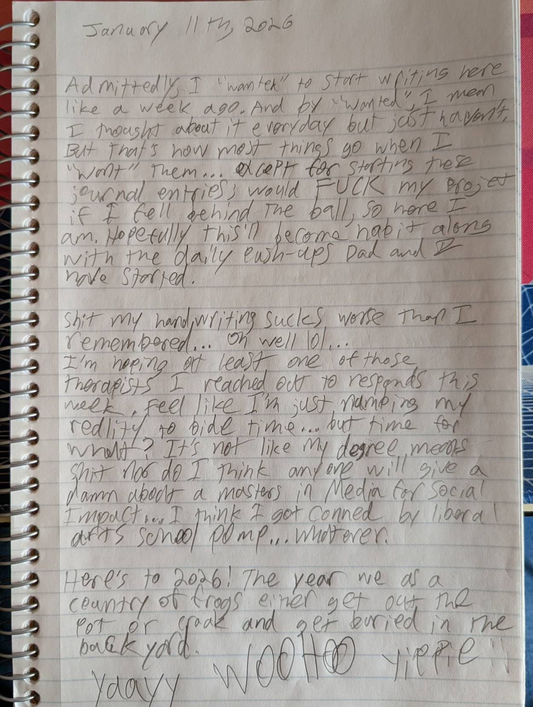
TRANSCRIPTION: January 11th, 2026
Admittedly I "wanted" to start writing here like a week ago. And by "wanted", I mean I thought about it everyday but just haven't. But that's how most things go when I "want" them...except for starting these jounral entries; would FUCK my project if I fell behind the ball, so here I am. Hopefully this'll become habit along with the daily push-ups Dad and I have started.
Shit my handwriting sucks worse than I remembered...oh well lol...
I'm hoping at least one of those therapists I reached out to responds this week. Feel like I'm just numbing my reality, to bide time...but time for what? It's not like my degree means shit nor do I think anyone will give a damn about a masters in Media for Social Impact...I think I got conned by liberal arts school...whatever.
Here's to 2026! The year we as a country of frogs either get out the pot or croak and get buried in the backyard.
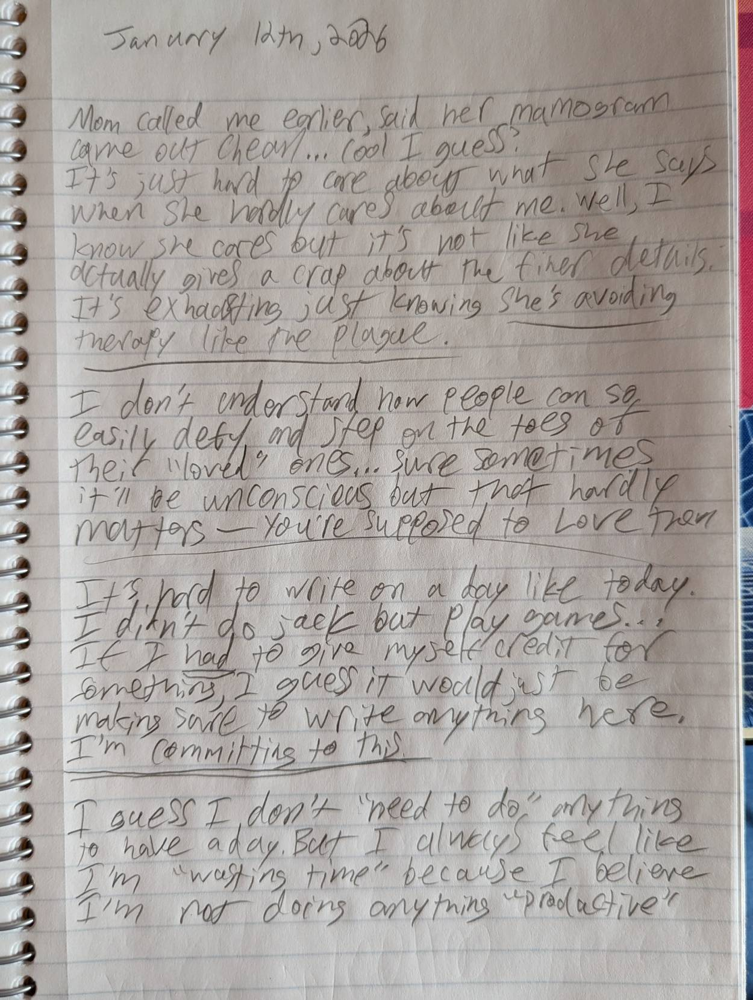
TRANSCRIPTION: January 12th, 2026
Mom called me earlier, said her mamogram came out clean...cool I guess? It's just hard to care about what she says when she ahrdly cares about me. Well, I know she cares but it's not like she actually gives a crap about the finer details. It's exhausting just knowing she's avoiding therapy like the plague.
I don't understand how people can so easily defy, and step on the toes of their "loved" ones...sure sometimes it'll be unconscious but that hardily matters - you're supposed to Love them.
It's hard to write on a day like today. I didn't do jack but play games... If I had to give myself credit for something, I guess it would just be making sure to write anything here. I'm committing to this.
I guess I don't "need to do" anything to have a day. But I always feel like I'm "wasting time" because I believe I'm not doing anything "productive"
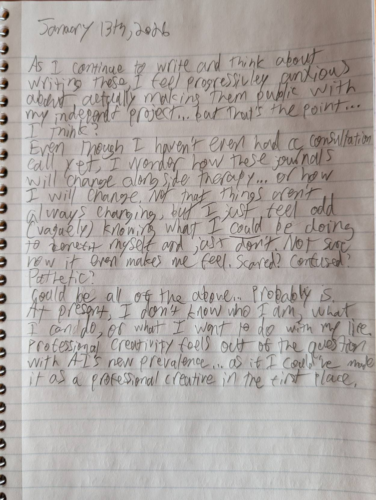
TRANSCIPTION: January 13th, 2026
As I continue to write and think about writing these, I feel progressivley anxious about actually making them public with my independent project...but that's the point...I think?
Even though I haven't even had a consultation call yet, I wonder how these journals will change alongside therapy...or how I will change. Not that things aren't always changing, but I just feel odd (vaguely) knowing what I COULD be doing to benefit myself and just don't. Not sure how it even makes me feel. Scared? Confused? Pathetic?
Could be all of the above...Probably is. At present, I don't know who I am, what I can do, or what I want to do with my life. Professional creativity feels out of the question with AI's new prevalence...as if I could've made it as a professional creative in the first place.
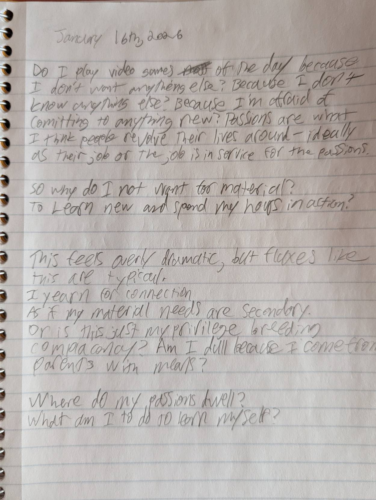
TRANSCRIPTION: January 16th, 2026
Do I play video games most of the day because I don't want anything else? Because I don't know anything else? Because I'm afraid of comitting to anything new? Passions are what I think people revolve their lives around - ideally as their job or the job is in service for the passion.
So why do I not want for material? To learn new and spend me hours in action?
This feels overly dramatic, but fluxes like this are typical.
I year for connection. As if my material needs are secondary. Or is this just my privilege breeding complacency? Am I dull because I come from parents with means?
Where do my passions dwell?
What am I do to to learn myself?
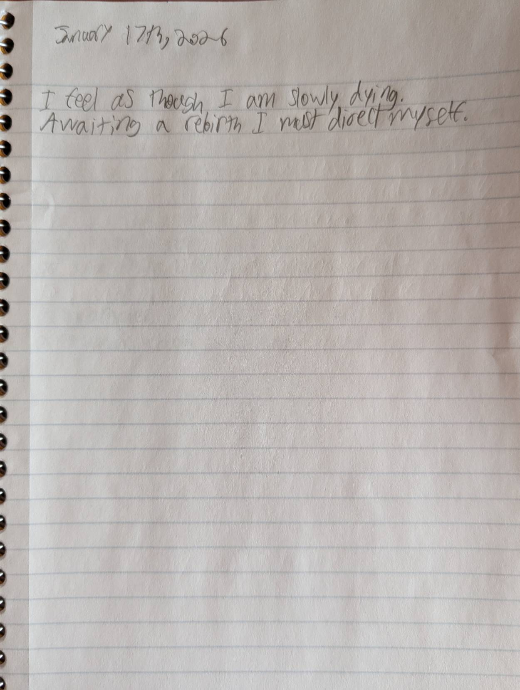
TRANSCRIPTION: January 17th, 2026
I feel as though I am slowly dying.
Awaiting a rebirth I must direct myself.
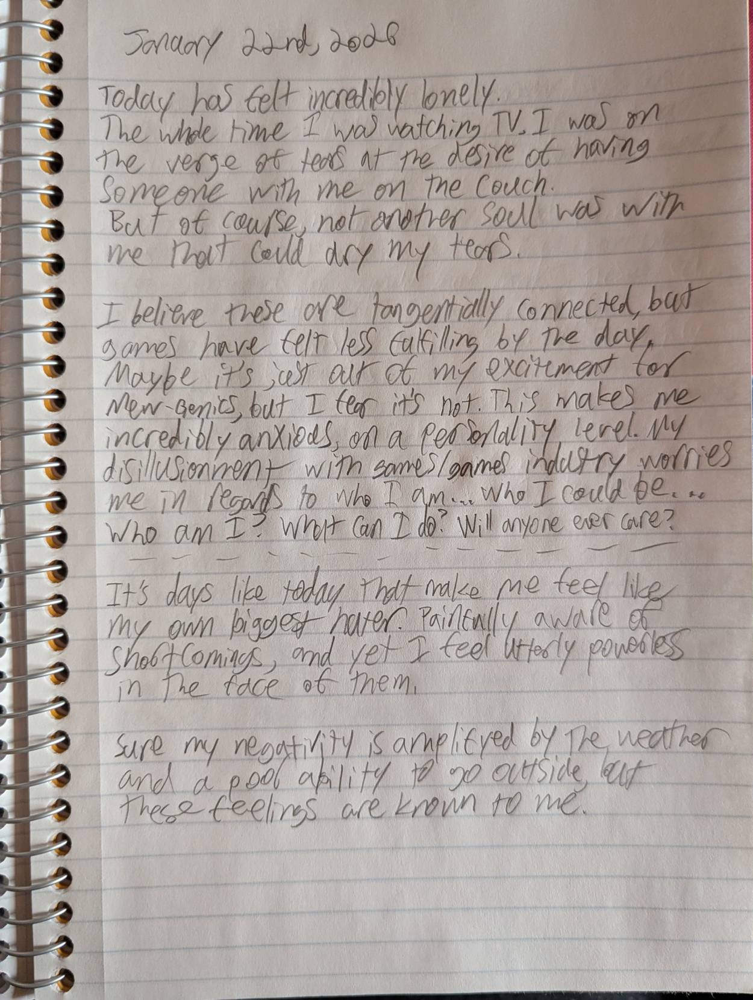
TRANSCRIPTION: January 22nd, 2026
Today has felt incredibly lonely.
The whole time I was watching TV, I was on the verge of tears at the desire of having someone with me on the couch. But of course, not another soul was with that could dry my tears.
I believe these are tangentially connected, but games have felt less fulfilling by the day. Maybe it's just out of my excitement for Mewgenics, but I fear it's not. This makes me incredibly anxious, on a personality level. My disillusionment with games/games industry worries me in regards to who I am...Who I could be...Who am I? What can I do? Will anyone ever care?
It's days like today that make me feel like my own biggest hater. Painfully aware of shortcomings, and yet I feel utterly powerless in the face of them.
Sure my negativity is amplified by the weather and poor ability to go outside, but these feelings are known to me.
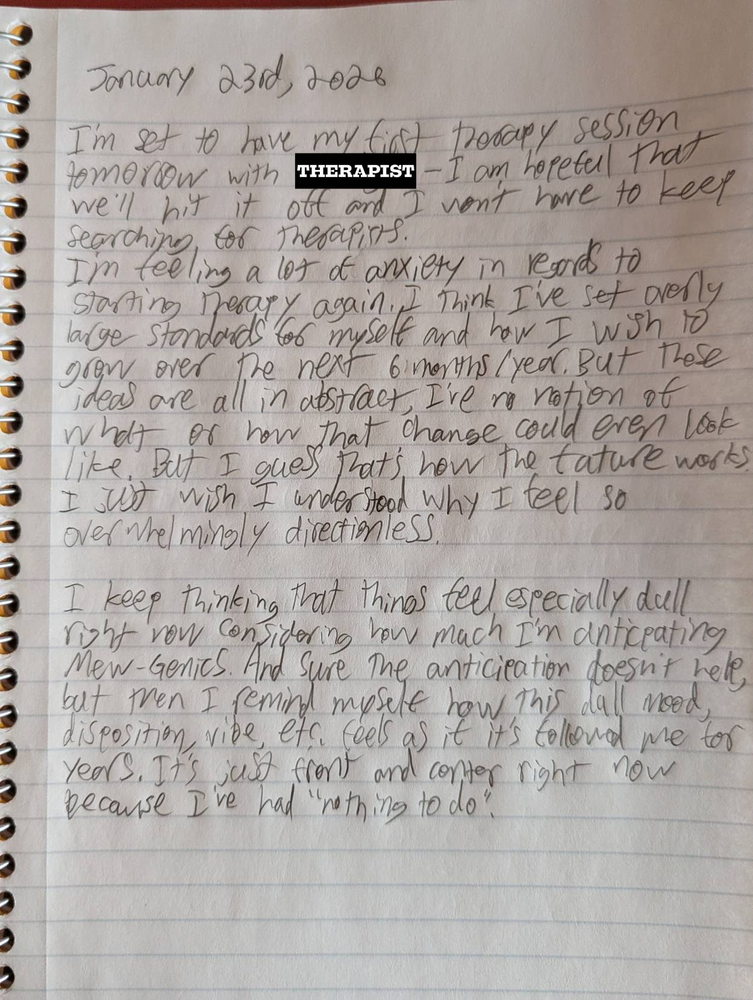
TRANSCRIPTION: January 23rd, 2026
I'm set to have my first therapy sesion tomorrow with [THERAPIST] - I am hopeful that we'll hit it off and I won't have to keep searching for therapists.
I'm feeling a lot of anxiety in regards to starting therapy again. I think I've set overly large standards for myself and how I wish to grow over the next 6 months/year. But these ideas are all in abstract, I've no notion of what or how that change could even look like. But I guess that's how the future works. I just wish I understood why I feel so overwhelmingly directionless.
I keep thinking that things feel especially dull right now considering how much I'm anticipating Mewgenics. And sure the anticipation doesn't help, but then I remind myself how this dull mood, disposition, vibe, etc. feels as if it's followed me for years. It's just front and center right now because I've had "nothing to do".
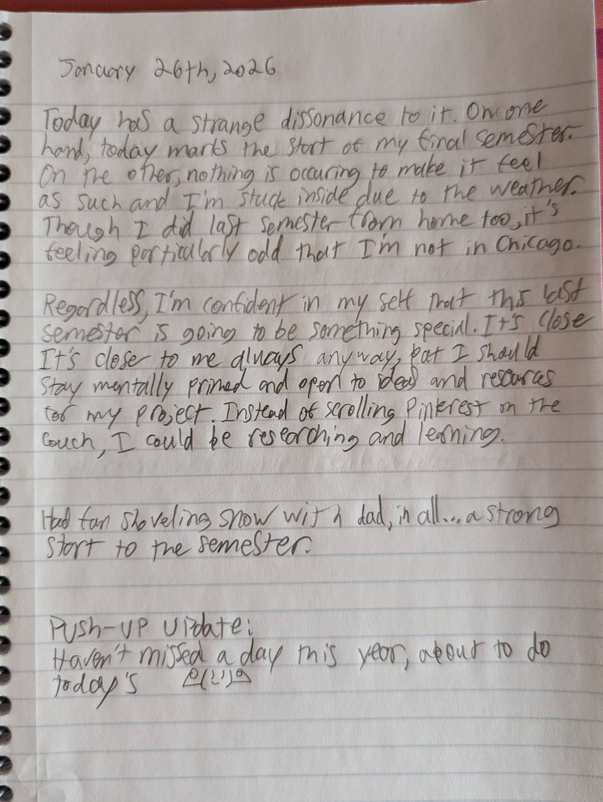
TRANSCRIPTION: January 26th, 2026
Today has a strange dissonance to it. On one hand, today marks the start of my final semester. On the other, nothing is occuring to make it feel as such and I'm stuck inside due to the weather. Though I did last semester from home too, it's feeling particularly odd that I'm not in Chicago.
Regardless, I'm confident in myself that this last semester is going to be something special. It's close to me always anyway, but I should stay mentally primed and open to ideas and resourcesx for my project. Instead of scrolling Pinterest on the couch, I could be researching and learning.
Had fun shoveling snow with dad, in all...a strong start to the semester.
Push-Up Update: Haven't missed a day this year, about to do today's
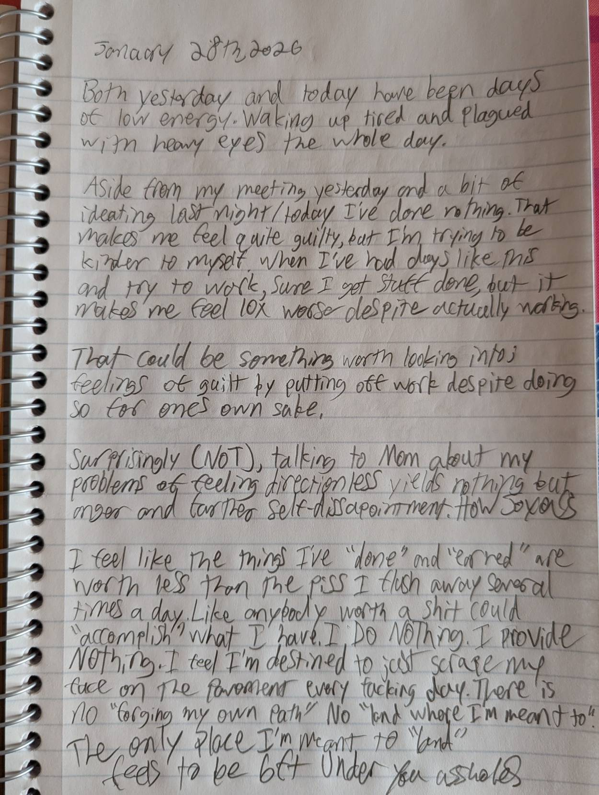
TRANSCRIPTION: January 28th, 2026
Both yesterday and today have been days of low energy. Waking up tired and plagued with heavy eyes the whole day.
Aside from my meeting yesterday and a bit of ideating last night/today I've done nothing. That makes me feel quite guilty, but I'm trying to be kinder to myself. When I've had days like this and try to work, sure I get stuff done, but it makes me feel 10x worse despite actually working.
That could be something worth looking into; feelings of guilt by putting off work despite doing so for ones own sake.
Surprisingly (NOT), talking to Mom about my problems of feeling directionless yields nothing but anger and further self-dissapointment. How JOYOUS
I feel like the things I've "done" and "earned" are worth less than the piss I flush away several times a day. Like anybody worth a shit could "accomplish" what I have. I DO NOTHING. I provide nothing. I feel I'm destined to just scrape my face on the pavement every fucking day. There is no "forging my own path", no "land where I'm meant to". The only place I'm meant to "land" feels to be 6ft under you assholes
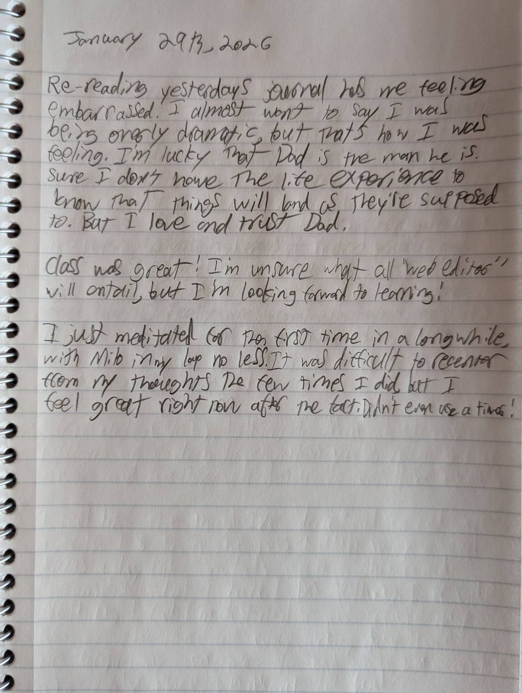
TRANSCRIPTION: January 29th, 2026
Re-reading yesterdays journal has me feeling embarrassed. I almost want to say I was being overly dramatic, but that's how I was feeling. I'm lucky that Dad is the man he is. Sure I don't have the life experience to know that things will land as they're supposed to. But I love and trust Dad.
Class was great! I'm unsure what all "web editor" will entail, but I'm looking forward to learning!
I just meditated for the first time in a long while, with Milo in my lap no less. It was difficult to recenter from my thoughts the few times I did, but I feel great right now after the fact. Didn't even use a timer!
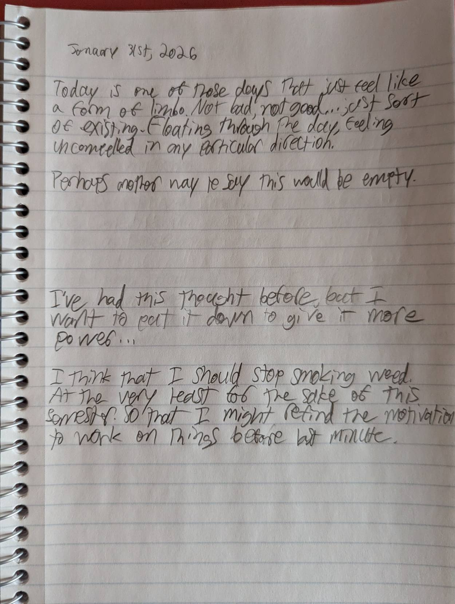
TRANSCRIPTION: January 31st, 2026
Today is one of those days that just feel like a form of limbo. Not bad, not good...just sort of existing. Floating through the day, feeling uncompelled in any particular direction.
Perhaps another way to say this would be empty.
I've had this thought before, but I want to put it down to give it more power...
I think that I should stop smoking weed. At the very least for the sake of this semester. So that I might re-find the motivation to work on things before last minute.
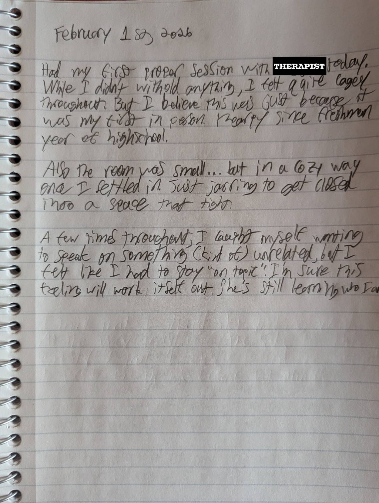
TRANSCRIPTION: February 1st, 2026
Had my first proper session with [THERAPIST] today. While I didn't withhold anything, I felt quite cagey throughout. But I believe this was just because it was my first in-person therapy since freshman year of highschool.
Also the room was small...but in a cozy way once I settled in. Just jarring to get closed into a space that tight.
A few times throughout, I caught myself wanting to speak on something (kind of) unrelated, but I felt like I had to stay "on topic". I'm sure this feeling will work itself out. She's still learning who I am.
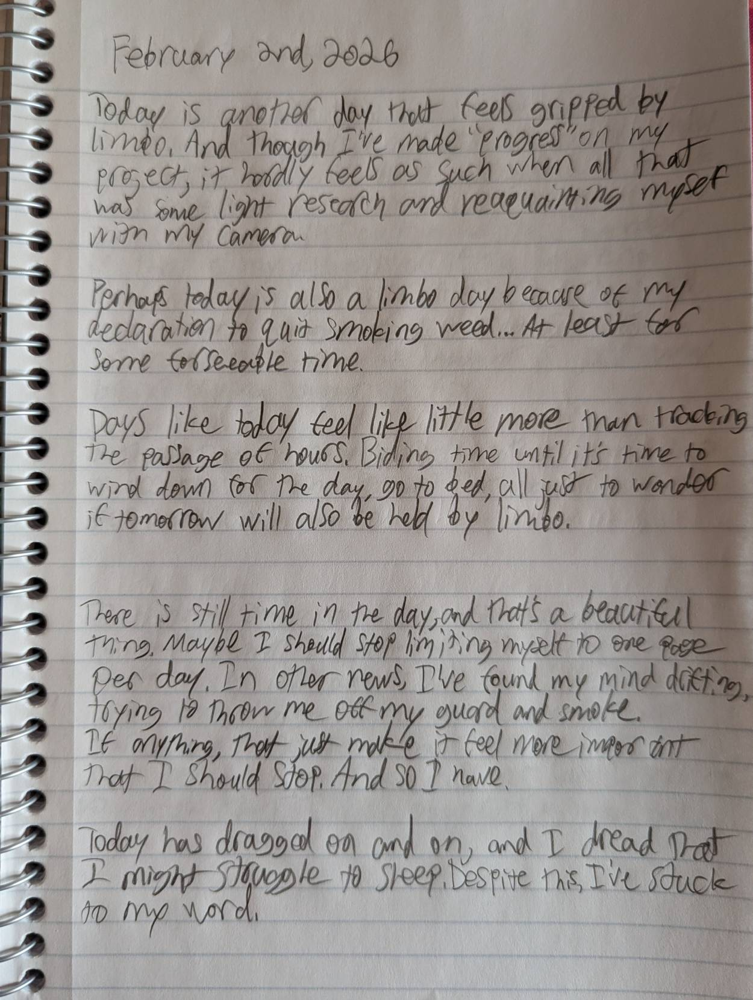
TRANSCRIPTION: February 2nd, 2026
Today is another day that feels gripped by limbo. And though I've made "progress" on my project, it hardly feels as such when all that was some light research and reaquainting myself with my camera.
Perhaps today is also a limbo day because of my declaration to quit smoking weed...At least for some forseeable time.
Days like today feel like little more than tracking the passage of hours. Biding time until it's time to wind down for the day, go to bed, all just to wonder if tomorrow will also be held by limbo.
There is still time in the day, and that's a beautiful thing. Maybe I should stop limiting myself to one page per day. IIn other news, I've found my mind drifting, trying to throw me off my guard and smoke. If anything, that just makes it feel more important that I should stop. And so I have.
Today has dragged on and on, and I dread that I might struggle to sleep. Despite this, I've stuck to my word.
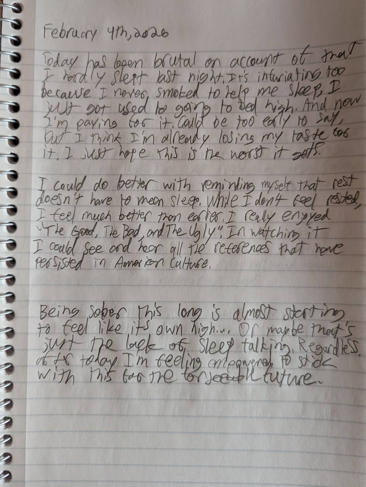
TRANSCRIPTION: February 4th, 2026
Today has been brutal on account of that I hardly slept last night. It's infuriating too because I never smoked to help me sleep, I just got used to going to bed high. And now I'm paying for it. Could be too early to say, but I think I'm already losing my taste for it. I just hope this is the worst it gets.
I could do better with reminding myself that rest doesn't have to mean sleep. While I don't feel rested, I feel much better than earlier. I really enjoyed "The Good, The Bad, and The Ugly". In watching it I could see and hear all the references that have persisted in American culture.
Being sober this long is almost starting to feel like its own high...Or maybe that's just the lack of sleep talking. Regardless, after today I'm feeling empowered to stick with this for the forseeable future.
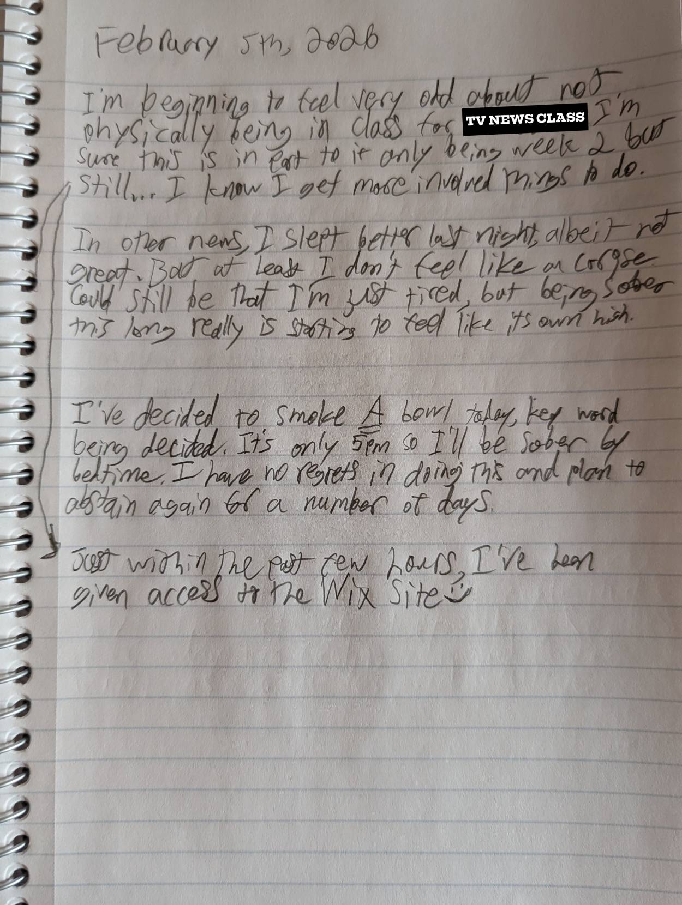
TRANSCRIPTION: February 5th, 2026
I'm beginning to feel very odd about not physically being in class for [TV NEWS CLASS]. I'm sure this is in part to it only being week 2 but still...I know I'll get more involved things to do.
In other news, I slept better last night, albeit not great. But at least I don't feel like a corpse could still be that I'm just tired, but being sober this long really is starting to feel like it's own high.
I've decided to smoke A bowl today, key word being decided. It's only 5pm so I'll be sober by bedtime. I have no regrets in doing this and plan to abstain again for a number of days.
Just within the past few hours, I've been given access to the Wix site :)
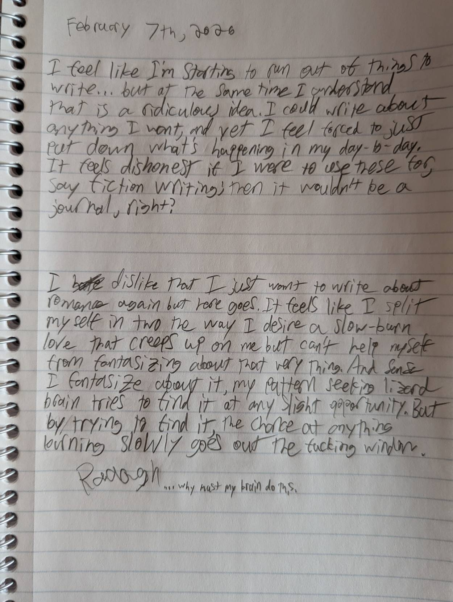
TRANSCRIPTION: February 7th, 2026
I feel like I'm starting to run out of things to write...but at the same time I understand that is a ridiculous idea. I could write about anything I want, and yet I feel forced to just put down what's happening in my day-to-day. It feels dishonest if I were to use these for, say fiction writing; then it wouldn't be a journal, right?
I dislike that I just want to write about romance again but here goes. It feels like I split myself in two the way I desire a slow-burn love that creeps up on me but can't help myself from fantasizing about that very thing. And since I fantasize about it, my pattern seeking lizard brain tries to find it at any slight opportunity. But by trying to find it, the chance at anything burning slowly goes out the fucking window.
RAAAAGH...why must my brain do this.
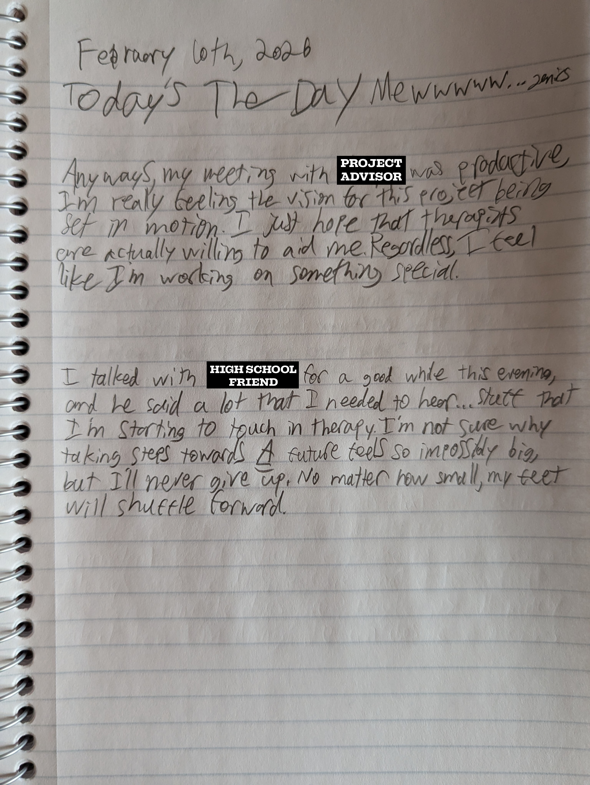
TRANSCRIPTION: February 10th, 2026
TODAY'S THE DAY MEWWWWW...GENICS
Anyways my meeting with [PROJECT ADVISOR] was productive, I'm really feeling the vision for this project being set in motion. I just hope that therapists are actually willing to aid me. Regardless, I feel like I'm working on something special.
I talked with [HIGH SCHOOL FRIEND] for a good while this evening, and he said a lot that I needed to hear...stuff that I'm starting to touch in therapy. I'm not sure why taking steps towards A future feels so impossibly big, but I'll never give up. No matter how small, my feet will shuffle forward.
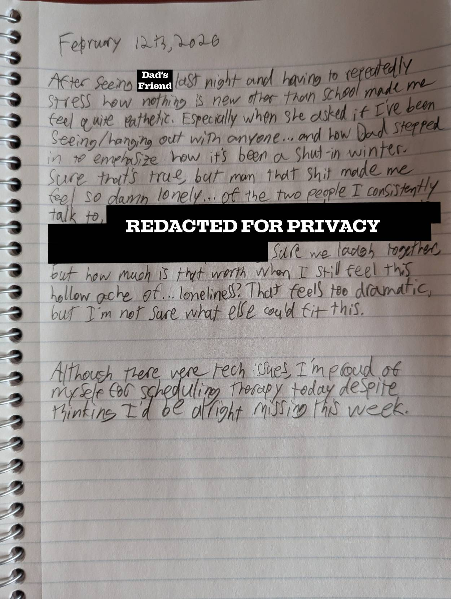
TRANSCRIPTION: February 12th, 2026
After seeing [DAD'S FRIEND] last night and having to repeatedly stress how nothing is new other than school made me feel quite pathetic. Especially when she asked if I've been seeing/hanging out with anyone...and how Dad stepped in to emphasize how it's been a shut-in winter. Sure that's true, but man that shit made me feel so damn lonely...of the two people I consistently talk to, [REDACTED FOR PRIVACY]. Sure we laugh together, but how much is that worth when I still feel this hollow ache of...loneliness? That feels too dramatic, but I'm not sure what else could fit this.
Although there were tech issues, I'm proud of myself for scheduling therapy today despite thinking I'd be alright missing this week.
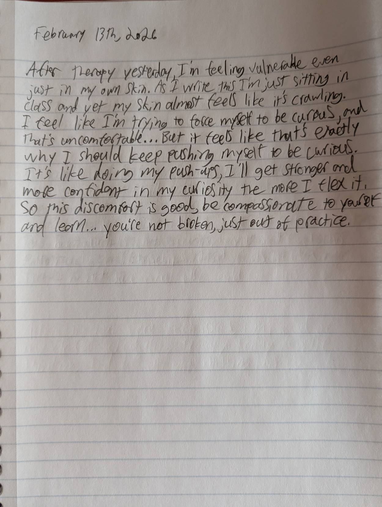
TRANSCRIPTION: February 13th, 2026
After therapy yesterday, I'm feeling vulnerable even just in my own skin. As I write this I'm just sitting in class and yet my skin almost feels like it's crawling. I feel like I'm trying to force myself to be curious, and that's uncomfortable...But it feels like that's exactly why I should keep pushing myself to be curious. It's like doing my push-ups, I'll get stronger and more confident in my curiosity the more I flex it. So this discomfort is good, be compassionate to yourself and learn...you're not broken, just out of practice.
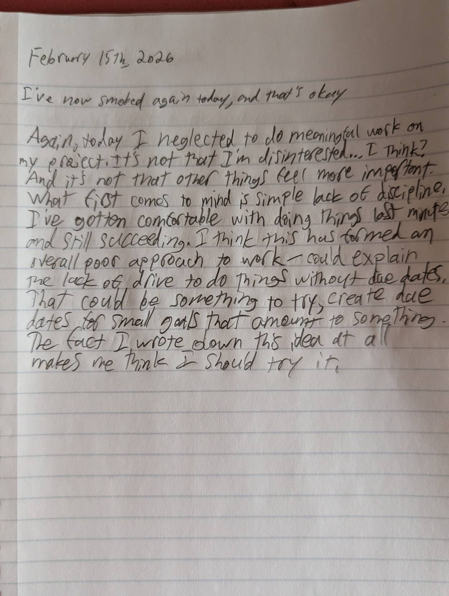
TRANSCRIPTION: February 15th, 2026
I've now smoked again today, and that's okay
Again, today I neglected to do meaningful work on my project. It's not that I'm disinterested...I think? And it's not that other things feel more important. What first comes to mind is simple lack of discipline. I've gotten comfortable with doing things last minute, and still succeeding. I think this has formed an overall poor approach to work - could explain the lack of drive to do things without due dates. That could be something to try, create due dates for small goals that amount to something. The fact I wrote down this idea at all makes me think I should try it.
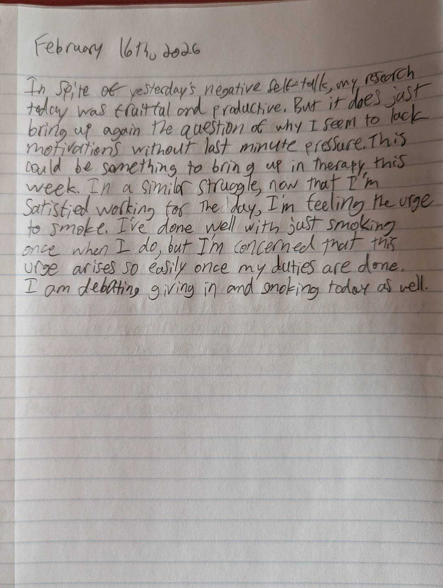
TRANSCRIPTION: February 16th, 2026
In spite of yesterday's negative self-talk, my research today was fruitful and productive. But it does just bring up again the question of why I seem to lack motivations without last minute pressure. This could be something to bring up in therapy this week. In a similar struggle, now that I'm satisfied working for the day, I'm feeling the urge to smoke. I've done will with just smoking once when I do, but I'm concerned that this urge arises so easily once my duties are done. I am debating giving in and smoking today as well.
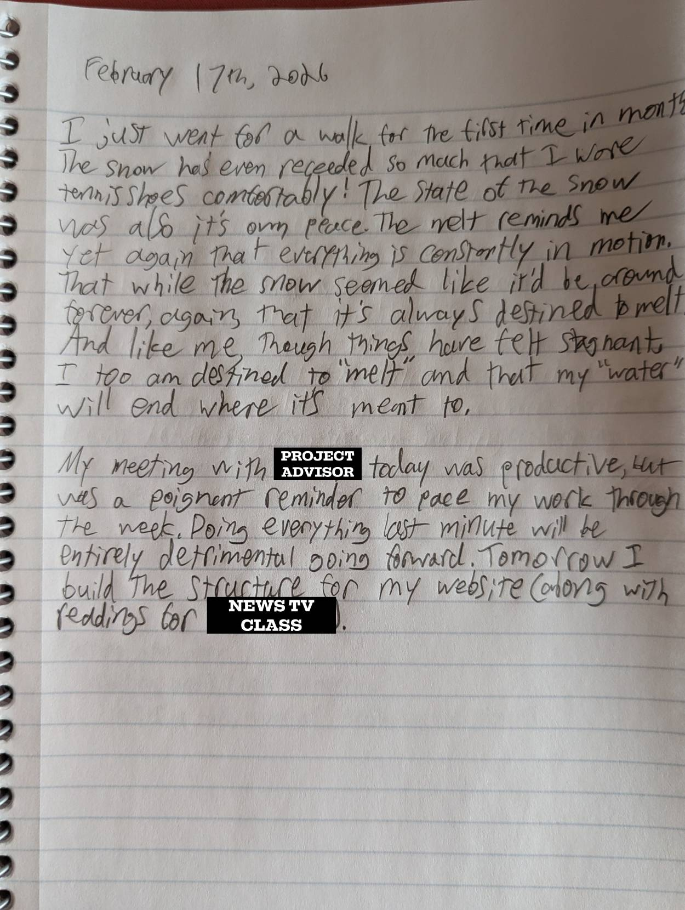
TRANSCRIPTION: February 17th, 2026
I just went for a walk for the first time in months. The snow has receeded so much that I wore tennis shoes comfortably! The state of the snow was also it's own peace. The melt reminds me yet again that everything is constantly in motion. That while the snow seemed like it'd be arund forever, again, that it's always destined to melt. And like me, though things have felt stagnant, I too am destined to "melt" and that my "water" will end where it's meant to.
My meeting with [PROJECT ADVISOR] today was productive, but was a poignant reminder to pace my work through the week. Doing everything last minute will be entirely detrimental going forward. Tomorrow I build the structure for my website (along with reading for [NEWS TV CLASS]).
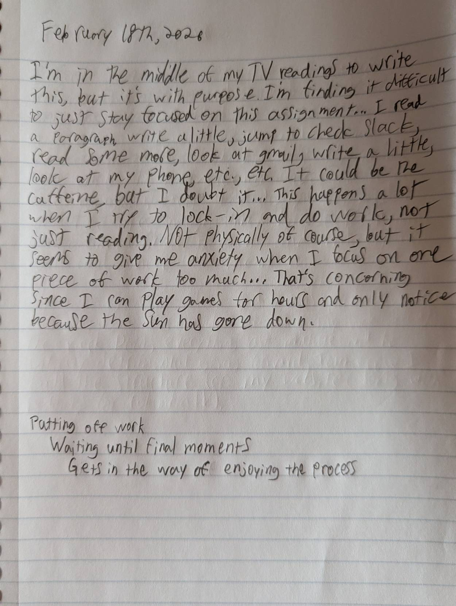
TRANSCRIPTION: February 18th, 2026
I'm in the middle of my TV readings to write this, but it's with purpose. I'm finding it difficult to just stay focused on this assignment...I read a paragraph, write a little, jump to check Slack, read some more, look at gmail, write a little, look at my phone, etc, etc. It could be the caffeine, but I doubt it...this happens a lot when I try to lock-in and do work, not just reading. Not physically of course, but it seems to give me anxiety when I focus on one piece of work too much...That's concerning since I can play games for hours and only notice because the sun has gone down.
Putting off work
Waiting until final moments
Gets in the way of enjoying the process
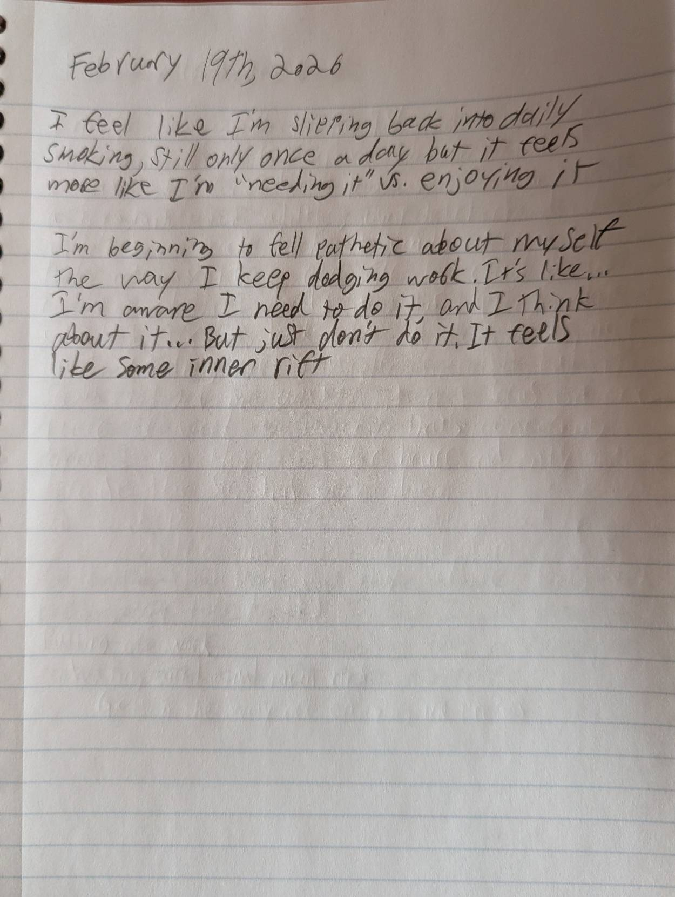
TRANSCRIPTION: February 19th, 2026
I feel like I'm slipping back into daily smokming, still only once a day but it feels more like I'm "needing it" vs. enjoying it.
I'm beginning to feel pathetic about myself the way I keep dodging work. It's like...I'm aware I need to do it, and I think about it...But just don't do it. It feels like some inner rift.
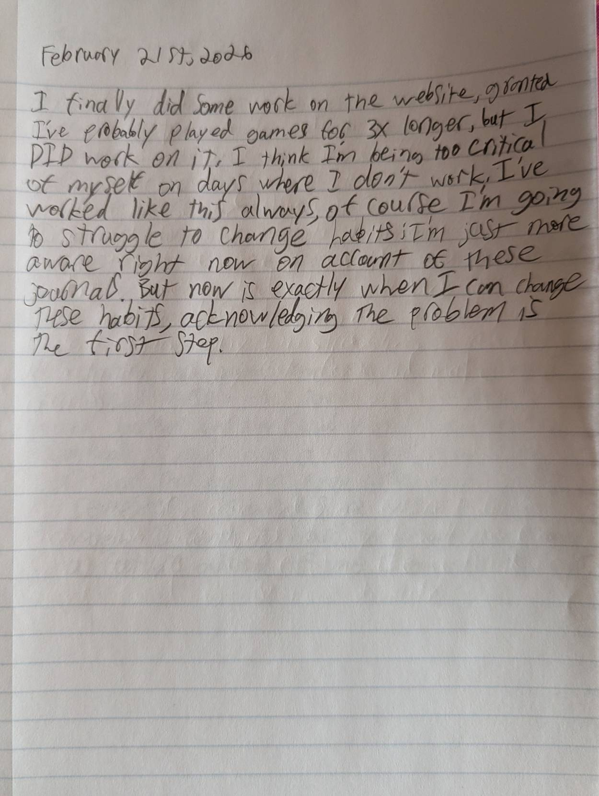
TRANSCRIPTION: February 21st, 2026
I finally did some work on the website, granted I've probably played games for 3x longer, but I DID work on it. I think I'm being too critical of myself on days where I don't work. I've worked like this always, of course I'm going to struggle to change habits; I'm just more aware right now on account of these journals. But now is exactly when I can change thses habits, acknowledging the problem is the first step.
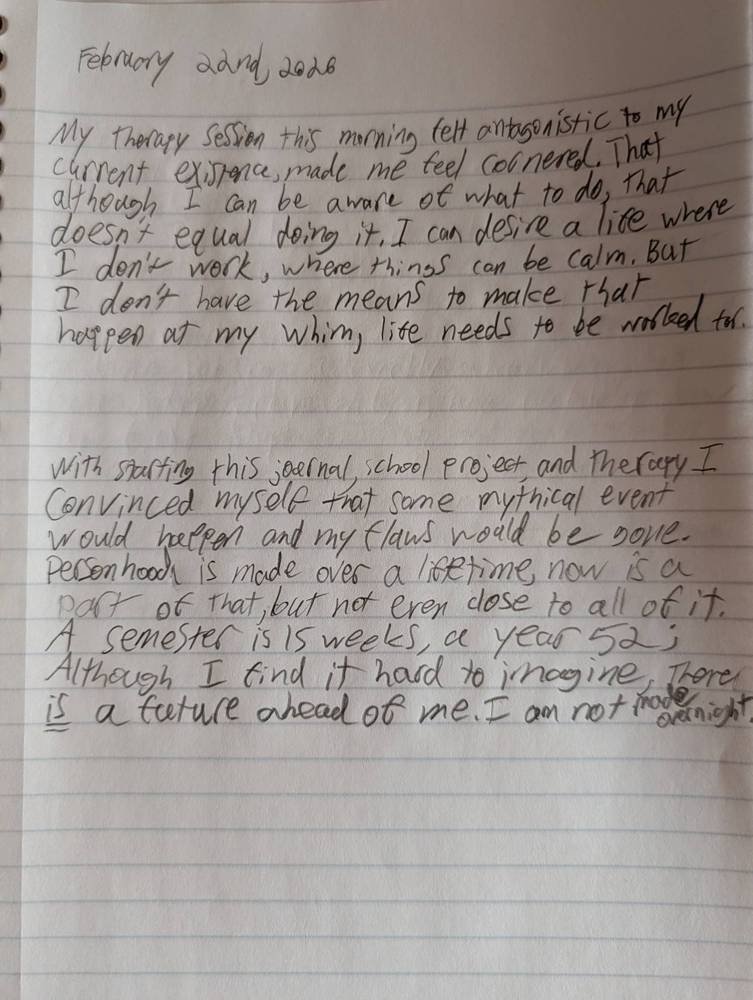
TRANSCRIPTION: February 22nd, 2026
My therapy session this morning felt antagonistic to my current existence, made me feel cornered. That although I can be aware of what to do, that doesn't equal doing it. I can desire a life where I don't work, where things can be calm. But I don't have the means to make that happen at my whim, life needs to be worked for.
With starting this journal, school project, and therapy I convinced myself that some mythical even would happen and my flaws would be gone. Personhood is made over a lifetime, now is a part of that, but not even close to all of it. A semester is 15 weeks, and year 52; Although I find it hard to imagine, there IS a future ahead of me. I am not made overnight.
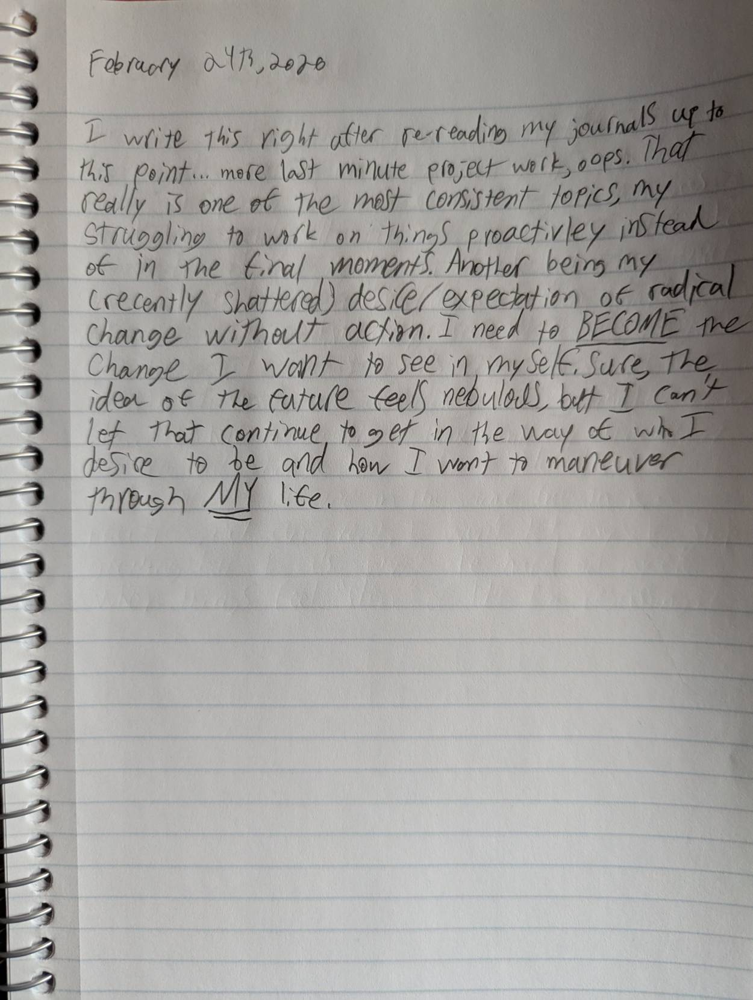
TRANSCRIPTION: February 24th, 2026
I write this right after re-reading my journals up to this point...more last minute project work, oops. That really is one of the most consistent topics, my struggling to work on things proactivley instead of in the final moments. Another being my (recently shattered) desire/expectation of radical change without action. I need to BECOME the change I want to see in myself. Sure, the idea of a future feels nebulous, but I can't let that continue to get in the way of who I desire to be and how I want to maneuver through MY life.
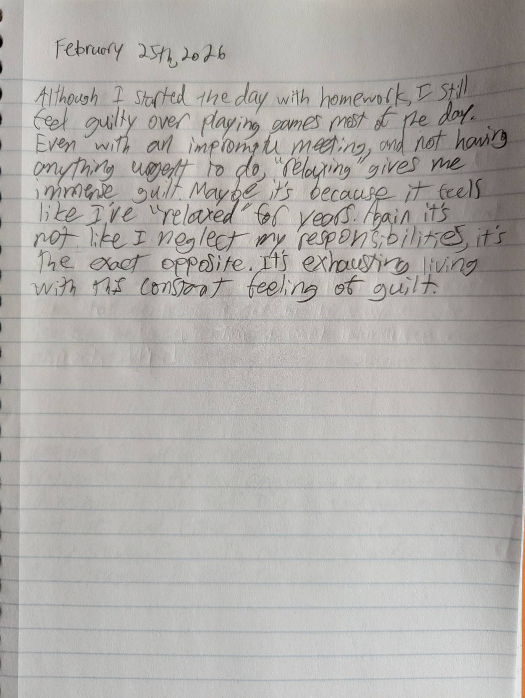
TRANSCRIPTION: February 25th, 2026
Although I started the day with homework, I still feel guilty over playing games most of the day. Even with an impromptu meeting, and not having anything urgent to do, "relaxing" gives me immense guilt. Maybe it's because it feels like I've "relaxed" for years. Again it's not like I neglect my responsibilities, it's the exact opposite. It's exhausting living with this constant feeling of guilt.
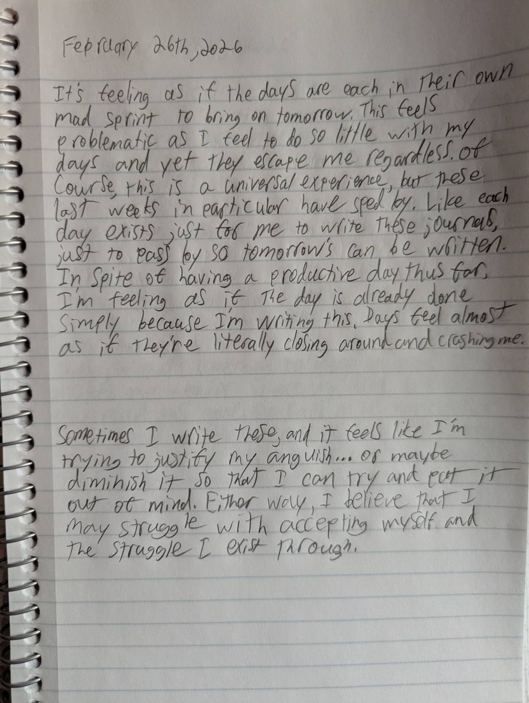
TRANSCRIPTION: February 26th, 2026
It's feeling as if the days are each in their own mad sprint to bring own tomorrow. This feels problematic as I feel to do so little with my days and yet they escape me regardless. Of course, this is a universal experience, but these last weeks in particular have sped by. Like each day exists just for me to write these journals, just to pass by so tomorrow's can be written. In spite of having a productive day thus far, I'm feeling as if the day is already done simply because I'm writing this. Days feel almost as if they're literally closing around and crushing me.
Sometimes I write these, and it feels like I'm tryuing to justify my anguish...or maybe diminish it so that I can try and put it out of my mind. Either way, I believe that I may struggle with accepting myself and the struggles I exist through.
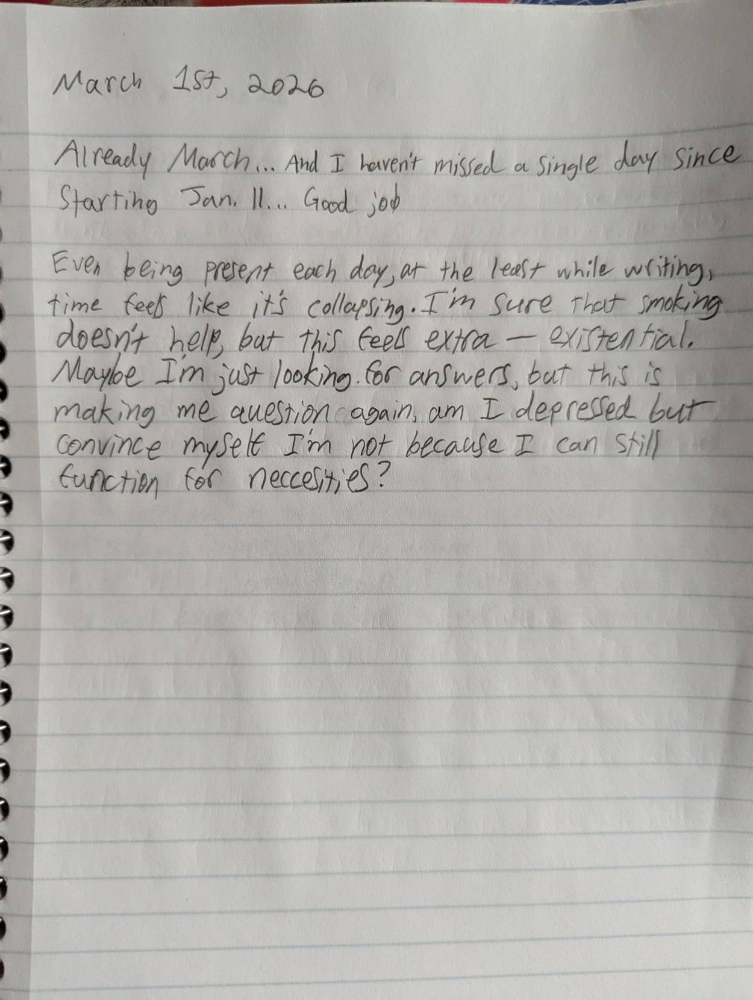
TRANSCRIPTION: March 1st, 2026
Already March...And I haven't missed a single day since starting Jan. 11...Good job
Even being present each day, at least while writing, time feels like it's collapsing. I'm sure that smoking doesn't help, but this feels extra - existential. Maybe I'm just looking for answers, but this is making me question again, am I depressed but convince myself I'm not because I can still function for necessities?
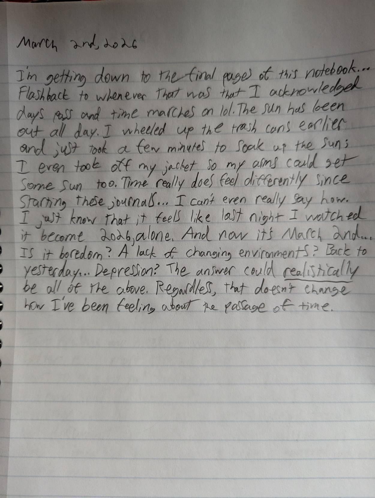
TRANSCRIPTION: March 2nd, 2026
I'm getting down to the final pages of this notebook...Flashback to whenever that was that I acknowledged days pass and time marches on lol. The sun has been out all day. I wheeled up the trash cans earlier and just took a few minutes to soak up the sun; I even took off my jacket so my arms could get some sun too. Time really does feel differently since starting these journals...I can't even really say how. I just know that it feels like last night I watched it become 2026, alone. And now it's March 2nd...
Is it boredom? A lack of changing environments? Back to yesterday...Depression? The answer could realistically be all of the above. Regardless, that doesn't change how I've been feeling about the passage of time.
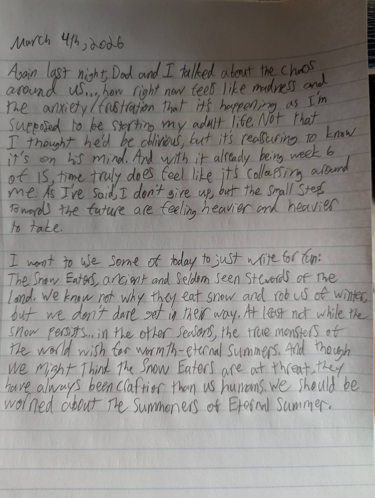
TRANSCRIPTION: March 4th, 2026
Again last night, Dad and I talked about the chaos around us...how right now feels like madness and the anxiety/frustration that it's happening as I'm supposed to be starting my adult life. Not that I thought he'd be oblivious, but it's reassuring to know it's on his mind. And with it already being week 6 of 15, time truly does feel like it's collapsing around me. As I've said, I don't give up, but the small steps towards the future are feeling heavier and heavier to take.
I want to take some of today to just write for fun:
The Snow Eaters, ancient and seldom seen stewards of the land. We know not why they eat snow and rob us of winter, but we don't dare get in their way. At least not while the snow persists...in the other seasons, the true monsters of the world wish for warmth - eternal summers. And though we might think The Snow Eaters are at threat, they have always been craftier than us humans. We should be worried about The Summoners of Eternal SUmmer.
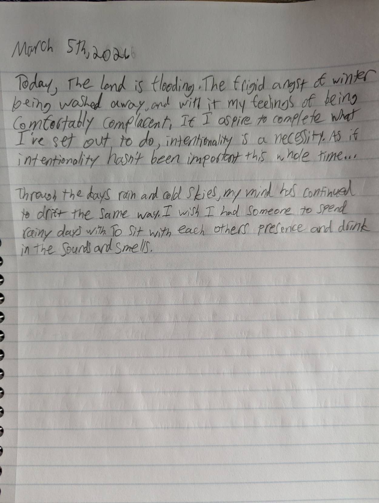
TRANSCRIPTION: March 5th, 2026
Today, the land is flooding. The frigid angst of winter being washed away, and with it my feelings of being comfortably complacent. If I aspire to complete what I've set out to do, intentionality is a necessity. As if intentionality hasn't been important this whole time...
Through the days of rain and cold skies, my mind has continued to drift the same way. I wish I had someone to spend rainy days with. To sit with each others presence and drink in the sounds and smells.
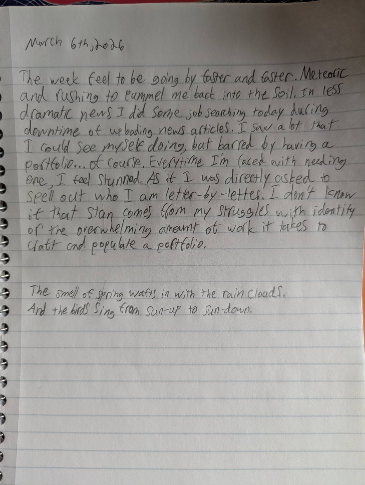
TRANSCRIPTION: March 6th, 2026
The weeks feel to be going by faster and faster. Meteoric and rushing to pummel me back into the soil. In less dramatric news, I did some job searching today during downtime of uploading news articles. I saw a lot that I could see myself doing, but barred by having a portfolio...of course. Everytime I'm faced with needing one, I feel stunned. As if I was directly asked to spell out who I am letter-by-letter. I don't know if that sun comes from my struggles with identity or the overwhelming amound of work it takes to craft and populate a portfolio.
The smell of spring wafts in with the rain clouds.
And the brids sing from sun-up to sun-down.